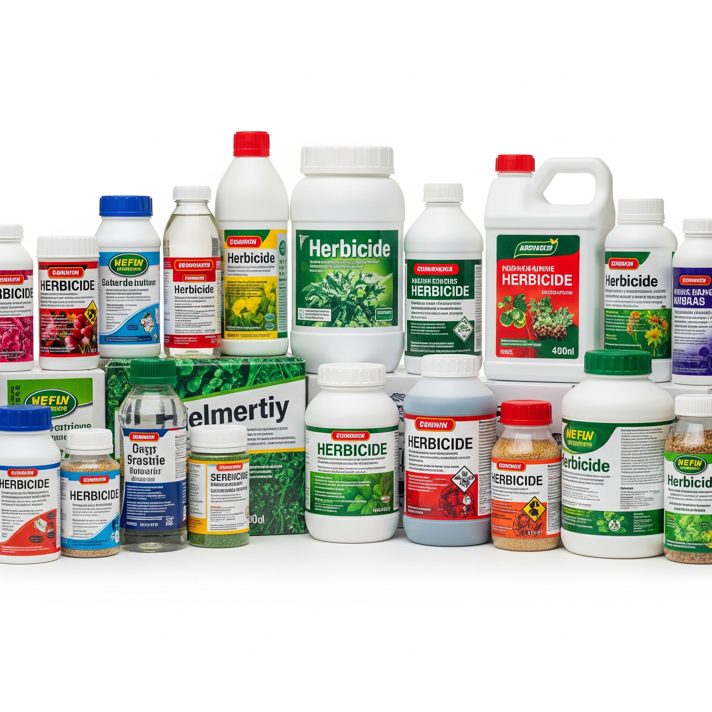

FERTILIZANTES

Los fertilizantes edáficos son sustancias, naturales o sintéticas, que se aplican directamente al suelo para enriquecerlo con los nutrientes esenciales que las plantas necesitan para crecer y desarrollarse óptimamente. Piensa en ellos como la "comida" del suelo, que a su vez alimenta las plantas
Productos Disponibles
HERBICIDAS

Los herbicidas son productos químicos (o a veces biológicos) diseñados para controlar o eliminar plantas indeseadas, comúnmente conocidas como malezas o malas hierbas. Estas malezas compiten con los cultivos por recursos vitales como la luz solar, el agua y los nutrientes, afectando
negativamente la productividad agrícola.
Productos Disponibles
FUNGICIDAS

Los fungicidas son un tipo de pesticida químico o en ocasiones biológico diseñado específicamente para controlar, mitigar o prevenir el crecimiento de hongos y oomicetos (organismos similares a los hongos que causan enfermedades) que afectan a las plantas.
Productos Disponibles
INSECTICIDAS

Los insecticidas son un tipo de pesticida específicamente formulado para controlar, repeler o eliminar insectos que se consideran plagas. Estos insectos pueden causar daños significativos a los cultivos agrícolas.
Productos Disponibles